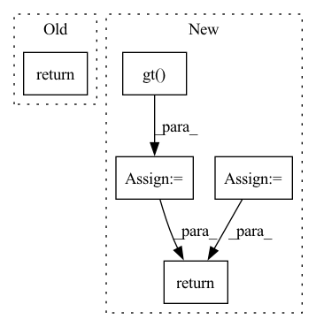

Pattern ID :1179

Before Change
score = ((1 + beta ** 2) * tp + smooth) \
/ ((1 + beta ** 2) * tp + beta ** 2 * fn + fp + smooth)
return score
return _f_score
// 设标签宽W，长H
def fast_hist(a, b, n):
After Change
inputs = F.interpolate(inputs, size=(ht, wt), mode="bilinear", align_corners=True)
temp_inputs = torch.softmax(inputs.transpose(1, 2).transpose(2, 3).contiguous().view(n, -1, c),-1)
temp_target = target.view(n, -1, ct)
//--------------------------------------------//
// 计算dice系数
//--------------------------------------------//
temp_inputs = torch.gt(temp_inputs, threhold).float()
tp = torch.sum(temp_target[...,:-1] * temp_inputs, axis=[0,1])
fp = torch.sum(temp_inputs , axis=[0,1]) - tp
fn = torch.sum(temp_target[...,:-1] , axis=[0,1]) - tp
score = ((1 + beta ** 2) * tp + smooth) / ((1 + beta ** 2) * tp + beta ** 2 * fn + fp + smooth)
score = torch.mean(score)
return score
// 设标签宽W，长H
def fast_hist(a, b, n):
In pattern: SUPERPATTERN
Frequency: 3
Non-data size: 5
Instances
Fragment ID: 5880808
Project Name: bubbliiiing/hrnet-pytorch
Commit Name: b85431a3de8a7df3396c86fe3596f581ba4c25da
Time: 2022-03-19
Author: 3323290568@qq.com
File Name: utils/utils_metrics.py
M Class Name: AnonimousClass
N Class Name: AnonimousClass
M Method Name: f_score(5)
N Method Name: f_score(3)
M Parent Class:
N Parent Class:
M File Name: utils/utils_metrics.py
N File Name: utils/utils_metrics.py
M Start Line: 35
M End Line: 35
N Start Line: 12
N End Line: 31
'>
Before Change
// fetch the last hidden state of last timestamp
c_global = ht = self.gather_indexes(gru_out, interaction[self.ITEM_LIST_LEN] - 1)
// avoid the influence of padding
mask = item_id_list.gt(0).unsqueeze(2).expand_as(gru_out)
q1 = self.a_1(gru_out)
q2 = self.a_2(ht)
q2_expand = q2.unsqueeze(1).expand_as(q1)
// calculate weighted factors α
alpha = self.v_t(mask * torch.sigmoid(q1 + q2_expand))
c_local = torch.sum(alpha.expand_as(gru_out) * gru_out, 1)
c_t = torch.cat([c_local, c_global], 1)
c_t = self.ct_dropout(c_t)
pred = self.b(c_t)
return pred
def calculate_loss(self, interaction):
target_id = interaction[self.TARGET_ITEM_ID]
After Change
// fetch the last hidden state of last timestamp
c_global = ht = self.gather_indexes(gru_out, item_seq_len - 1)
// avoid the influence of padding
mask = item_seq.gt(0).unsqueeze(2).expand_as(gru_out)
q1 = self.a_1(gru_out)
q2 = self.a_2(ht)
q2_expand = q2.unsqueeze(1).expand_as(q1)
// calculate weighted factors α
alpha = self.v_t(mask * torch.sigmoid(q1 + q2_expand))
c_local = torch.sum(alpha.expand_as(gru_out) * gru_out, 1)
c_t = torch.cat([c_local, c_global], 1)
c_t = self.ct_dropout(c_t)
seq_output = self.b(c_t)
return seq_output
def calculate_loss(self, interaction):
item_seq = interaction[self.ITEM_SEQ]
'>
Fragment ID: 5880815
Project Name: rucaibox/recbole
Commit Name: 1714ed39db89b102bc46fc23155f92de0d8996bd
Time: 2020-10-15
Author: hui.wang@ruc.edu.cn
File Name: recbox/model/sequential_recommender/narm.py
M Class Name: NARM
N Class Name: NARM
M Method Name: forward(3)
N Method Name: forward(2)
M Parent Class: SequentialRecommender
N Parent Class: SequentialRecommender
M File Name: recbox/model/sequential_recommender/narm.py
N File Name: recbox/model/sequential_recommender/narm.py
M Start Line: 81
M End Line: 100
N Start Line: 76
N End Line: 95
'>
Before Change
- betaln(n - value + 1, bad - n + value + 1)
- betaln(tot + 1, 1)
)
return result
class DiscreteUniform(Discrete):
After Change
- betaln(tot + 1, 1)
)
// value in [max(0, n - N + k), min(k, n)]
lower = tt.switch(tt.gt(n - N + k, 0), n - N + k, 0)
upper = tt.switch(tt.lt(k, n), k, n)
return bound(result, lower <= value, value <= upper)
class DiscreteUniform(Discrete):
'>
Fragment ID: 5880832
Project Name: pymc-devs/pymc3
Commit Name: 0402aab9594ec7c4f63c4ea35a52428d424652b4
Time: 2020-12-22
Author: 28983449+ricardoV94@users.noreply.github.com
File Name: pymc3/distributions/discrete.py
M Class Name: HyperGeometric
N Class Name: HyperGeometric
M Method Name: logp(2)
N Method Name: logp(2)
M Parent Class: Discrete
N Parent Class: Discrete
M File Name: pymc3/distributions/discrete.py
N File Name: pymc3/distributions/discrete.py
M Start Line: 925
M End Line: 933
N Start Line: 920
N End Line: 936